←
→
6. Datos técnicos
Motor · Física · Hardware · Comparativa
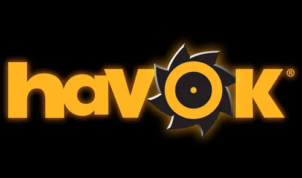
Motor y tecnologías
Motor propio · física integrada
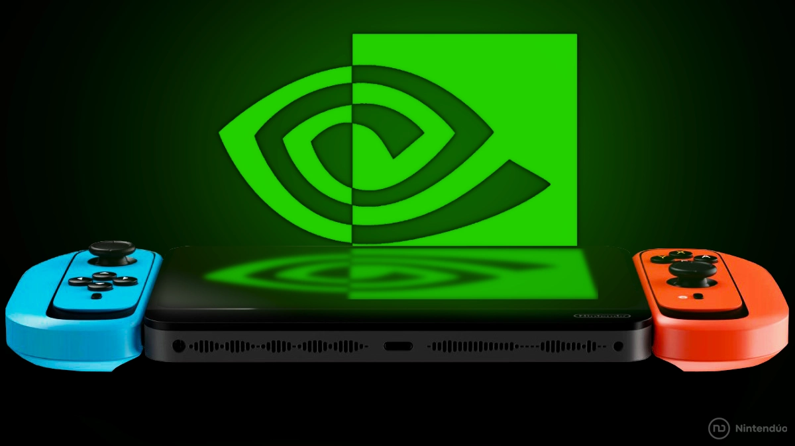
Hardware & rendimiento
Switch · Wii U · resolución dinámica
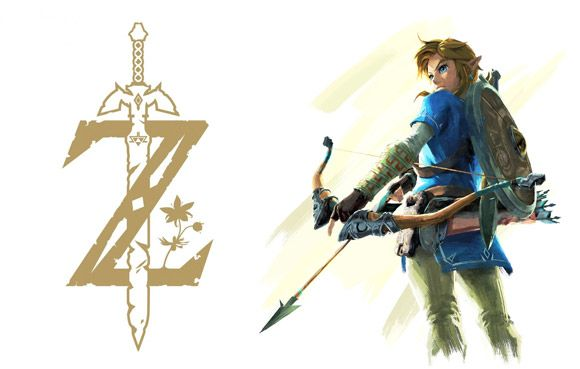
Física & simulación
Interacciones emergentes · clima sistémico
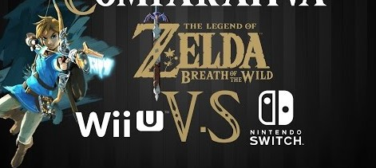
Comparativa técnica
Resolución · FPS · versiones
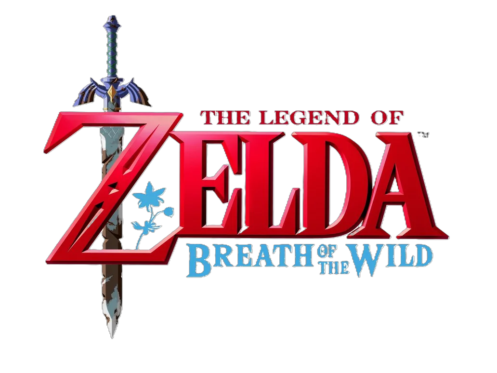
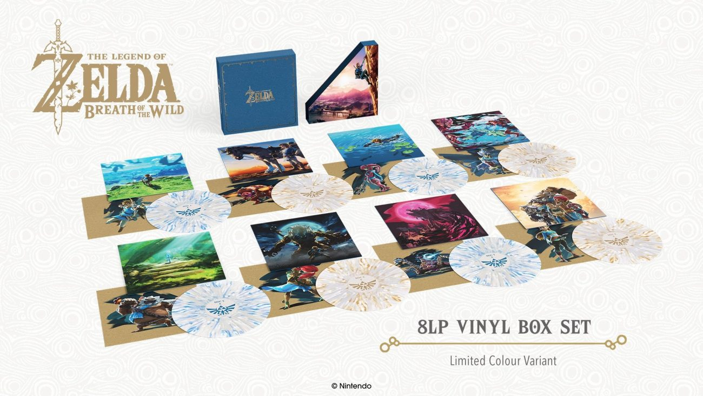
Versiones & mejoras
Switch · DLC · Switch 2 Edition
X
01 · Motor y tecnologías base
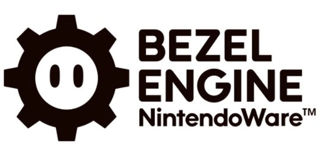
Motor interno Nintendo EPD
BOTW no usa motores comerciales. Nintendo diseñó un motor propio optimizado para mundo abierto y físicas sistémicas.
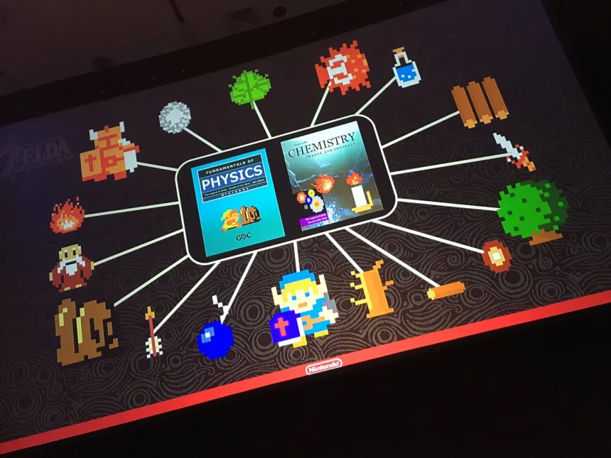
Prototipos 8-bit
Testeos iniciales en estilo 8-bit para validar diseño emergente antes del motor HD final.
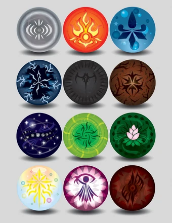
Física como columna vertebral
Interacciones sistémicas: viento, fuego, peso, metales, clima y combate condicionados por simulación física.
X
02 · Hardware y rendimiento
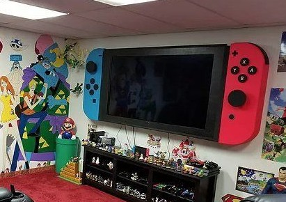
Switch TV
~900p · 30fps · escalado dinámico para estabilizar zonas de carga alta.
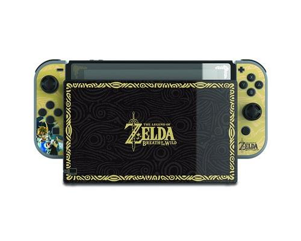
Switch portátil
720p · 30fps · ajustes dinámicos mantienen físicas y clima sin compromisos.
Wii U
720p · 30fps · más caídas en áreas densas por menor ancho de banda.
X
03 · Comparativa entre plataformas
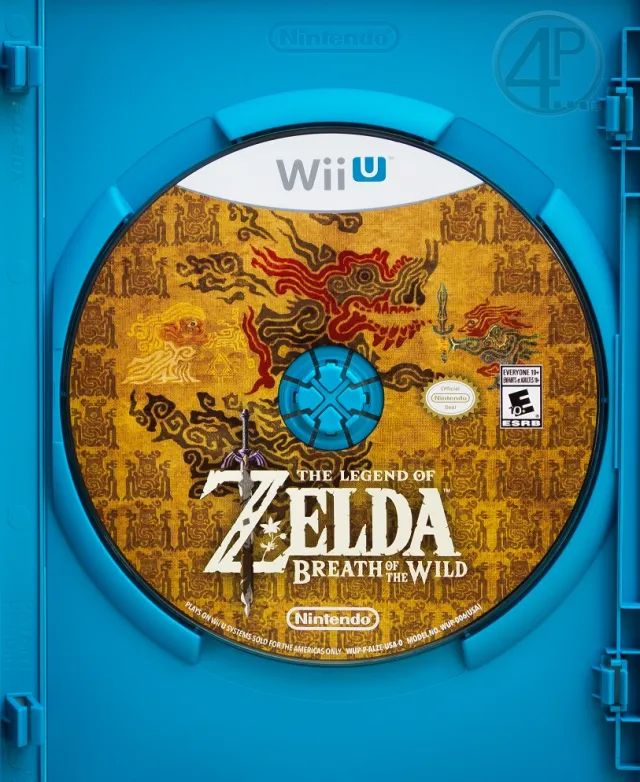
Wii U
720p · 30 fps
Más caídas en áreas pesadas
Switch
~900p (dock) · 720p (portátil) · 30 fps
Resolución dinámica mantiene estabilidad
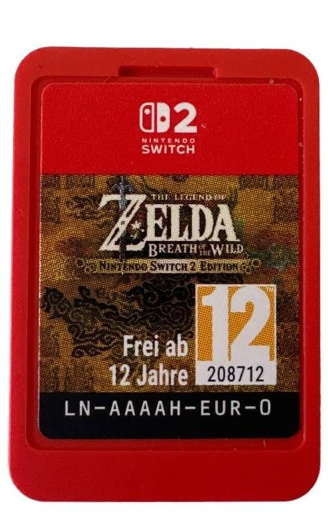
Switch 2
Mayor resolución · fps más altos
Cargas reducidas & mejoras visuales
X
04 · Física y simulación del mundo
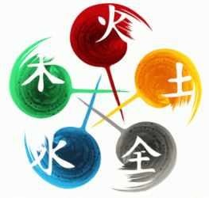
Interacción sistémica
Viento, peso, fuego, magnetismo — todo reacciona.
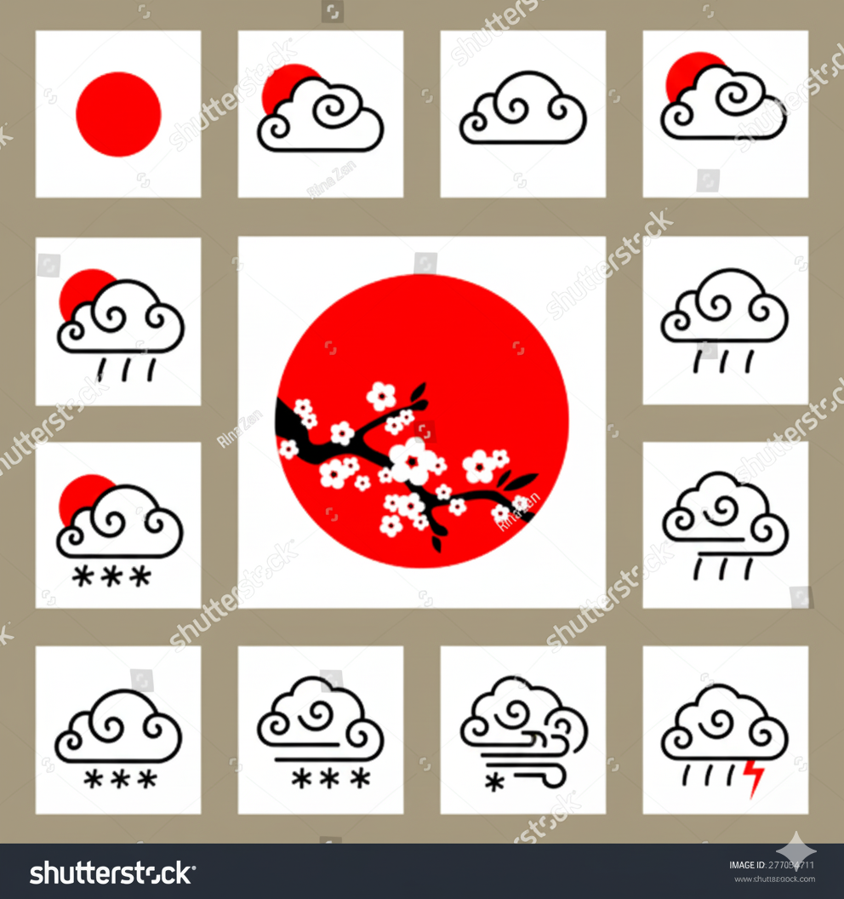
Clima real
Lluvia reduce fricción, rayos atraídos a metales.
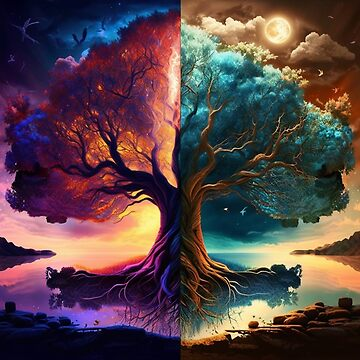
Ciclos naturales
Día/noche influye en IA, combate y exploración.
X
05 · Versiones y mejoras
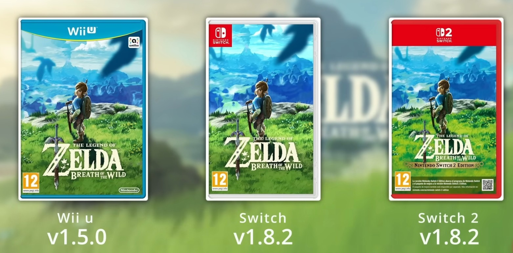
Wii U & Switch — Expansion Pass
DLC 1: Los Ensayos Maestros (Master Trials)
DLC 2: La Balada del Campeón (Champion's Ballad)
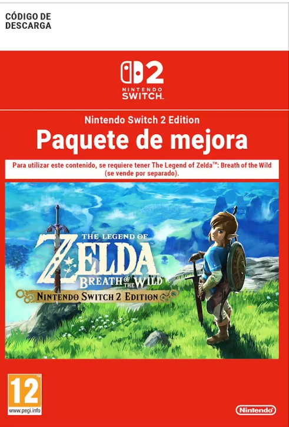
Switch 2 Edition - Upgrade Pack
Mismos DLC que en Switch + mejoras gráficas y rendimiento optimizado.


 Switch
~900p (dock) · 720p (portátil) · 30 fps
Resolución dinámica mantiene estabilidad
Switch
~900p (dock) · 720p (portátil) · 30 fps
Resolución dinámica mantiene estabilidad